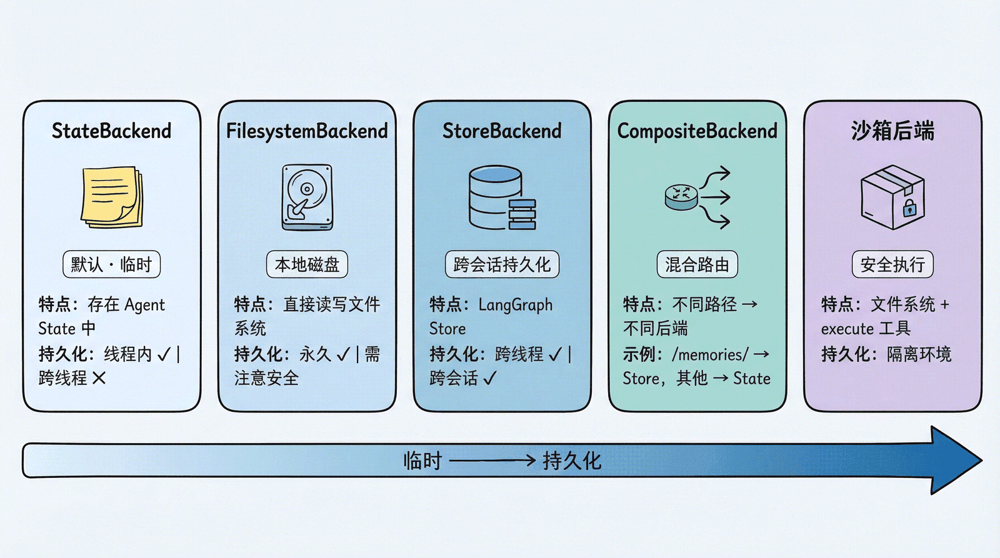
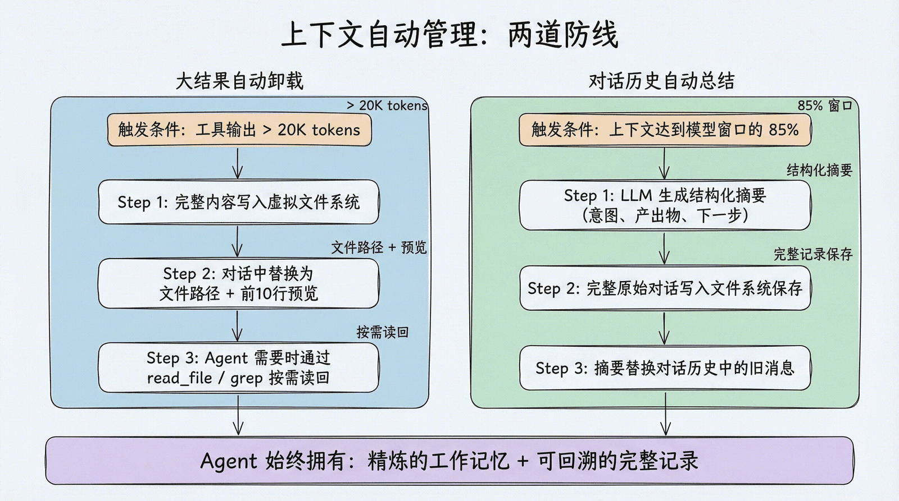

前言

当某次工具调用的返回结果超过 20000 tokens（注意是 tokens，不是字符数）时，deepagent 不会把这一大段结果直接塞进大模型的上下文，而是会把它写入虚拟文件系统，然后给大模型返回这段内容在虚拟文件系统中的路径以及前十行预览，后面大模型如果要看完整内容，则使用内置工具read_file/grep按需读取，避免一次性读大量token，污染大模型的输入。

本文不是去探讨 deep agent 如何做拦截，也不是去讨论 deep agent 相关的内置工具，而是讨论 deep agent 主要的虚拟文件系统，它是怎么样去存储这些大文件的。
文件按照使用需求可以分为：
- 临时文件
- 需要永久存储的文件
- 需要跨用户跨对话访问的信息（如长期记忆、用户偏好）
这就分别对应了 deepagent 的 4 种后端文件存储：
StateBackend：临时文件FilesystemBackend：需要永久存储的文件StoreBackend：需要跨用户跨对话访问的文件CompositeBackend：混合后端，可包含前三种及其定制后端
代码骨架
只讲重点代码，然后给出完整代码框架。
模拟大文件：
def big_string() -> str: # 模拟大文件
"""
function: generate a very long string
"""
return "Deepagent deepSeek deepHuman deepSpace\n" * 25000其中 docstring 是必不可少的，因为大模型将用此来理解这个工具。
StateBackend，是临时存储，存储在内存中，若关闭此对话，则之前存储的大文件全部消失StoreBackend，这可以自由选择，既可以使用InMemoryStore在内存中存，和StateBackend一样，也可以使用定制的存储方式，比如 redis, pgsql 等等。从这也可以看出来 deep agent 设计理念：因为这个后端存储模式应当涵盖更多的业务场景，所以说它必须支持跨对话的存储FilesystemBackend，存在磁盘，永久存储
import os
from langchain_anthropic import ChatAnthropic
from deepagents import create_deep_agent
from deepagents.backends import FilesystemBackend
from deepagents.backends import CompositeBackend
from deepagents.backends import StateBackend
from deepagents.backends import StoreBackend
from langgraph.store.memory import InMemoryStore
model = ChatAnthropic(
model=os.environ.get("MODEL_NAME", "你的模型"),
api_key=os.environ["填写你的key"],
base_url="填写你的ai网站",
)
def big_string() -> str: # 模拟大文件
"""
function: generate a very long string
"""
return "Deepagent deepSeek deepHuman deepSpace\n" * 25000
backend = CompositeBackend(
default=StateBackend(),
routes={
"/scratch/" : StateBackend(),
"/memories/" : FilesystemBackend(
root_dir="./memory",
virtual_mode=True,
),
"/project/" : FilesystemBackend(
root_dir="./project",
virtual_mode=True,
),
}
)
agent = create_deep_agent(
model = model,
tools=[big_string],
backend=backend,
system_prompt="""
你有以下几个存储区域：
/scratch/
用于临时推理、中间结果、一次性草稿。
/memories/
用于未来对话仍然值得记住的信息，例如用户偏好、长期规则。
/project/
用于需要真正保存到本地磁盘、以后人工查看或继续编辑的项目文件。
请根据内容性质自行选择合适的位置。"""
)
result = agent.invoke(
{"messages" : [{"role": "user", "content": "各种不同提示词"}]}
)
print("\n===== LAST MESSAGE =====")
print(result["messages"][-1].content)感受 StateBackend
添加打印文件路径打印的功能：
print("\n===== FILE's NAMES =====")
print(result.get("files",{}).keys())提示词：
{"messages" : [{"role": "user", "content": "读取那个big_string，告诉我，哪些已经存在，哪些名词现在还没有公司，产品等的对应"}]}这时agent就会读取我们之前用函数生成的那个超长字符串。
（原来这里少写了一对括号，.keys没有调用，打印出来的是方法对象本身而不是结果，补上()后才能看到真正的文件路径列表）
StateBackend把文件存在LangGraph的agent state里，随对话线程（thread）保持，关闭这个线程后就消失，不会像FilesystemBackend一样落盘。它挂在 state 上，其实result["files"]本身就能拿到完整的文件内容（不只是文件名），只是这里只打印了keys()，所以看到的只是路径。
感受 FilesystemBackend
这是磁盘存储，我们可以看到 agent 写入的内容。我们在我们的运行文件夹下，让 agent 创建一个文件夹并形容合适的内容。
agent = create_deep_agent(
model = model,
tools=[big_string],
backend=FilesystemBackend(
root_dir="./test",
virtual_mode=True,
),
)filesystemBackend 的结果：test 文件夹下有文件：toolu_bdrk_01GsaQRq7AMSjs7t7ynhMdgH，这个里面确实有 25000 行 Deepagent deepSeek deepHuman deepSpace。
感受 StoreBackend
如果使用内存存储的话，它和 StateBackend 在本实验的体感一样，因为本试验并不涉及跨用户跨对话的长期记忆功能/文件访问。
agent = create_deep_agent(
model = model,
tools=[big_string],
backend=StoreBackend(
namespace=lambda rt: ("local-test",),
store=InMemoryStore(),
)
# store可单独设置
)注意StoreBackend的store参数和backend是分开配置的，这里只是恰好也用了InMemoryStore。store可以换成别的持久化实现（比如接 redis、pgsql），跟backend选哪个类互不影响。
感受 CompositeBackend
混合路由：
backend = CompositeBackend(
default=StateBackend(),
routes={
"/scratch/" : StateBackend(),
"/memories/" : FilesystemBackend(
root_dir="./memory",
virtual_mode=True,
),
"/project/" : StoreBackend(
namespace=lambda rt : ("local-user",),
store=InMemoryStore(),
),
}
)提示词：
请处理下面三条信息，并自行决定分别存到哪里：
1. 我喜欢通过实验来学习技术概念。
2. 计算一下 12345 × 6789，过程中可以记录中间步骤。
3. 创建一份 Deep Agents Chapter 3 的实验记录，内容写"第一次虚拟文件系统实验完成"。这样子的话你就可以看到 memory 文件夹里面确实被 agent 记录了一些东西。
下面把project也变成磁盘存储，这样方便我们查看 ai 写的东西。这个代码我没有展示出来，大家自己写，当做一个小练习。
感受 agent 自主进行后端路由切换
提示词：
{"messages" : [{"role": "user", "content": "我今天发现："超过 20,000 tokens 的工具结果可能会被自动卸载到虚拟文件系统。"请你妥善保存这条信息。并且说出你的依据，如果有必要请你创建文件，而不是退而求其次，使用已经存在的文件。并且如果你发现这条信息已经存在，但位置不合适请删除它，并重新安排这条信息"}]}然后去看 agent 到底是把这条信息怎么处理，挺有意思的。
实验小结：我发现 deep agent 给我们搭建了大量的工具，用上面这段话，它可以自动地去帮你把原本的文件删除，重新再创建一个 markdown 文件。deep agent 给我们搭建了我们感受不到的文件删除，创建和写入系统，这是我第一次真真实实的感觉到 deep agent 给我们搭建 agent 带来的方便之处，它把很多的基础设施都写好了。不然我上面这条提示词写完以后，agent 并不能帮我删除，我还得自己手写如何让 agent 去删除或者是创建文件的相关工具，重复造轮子。